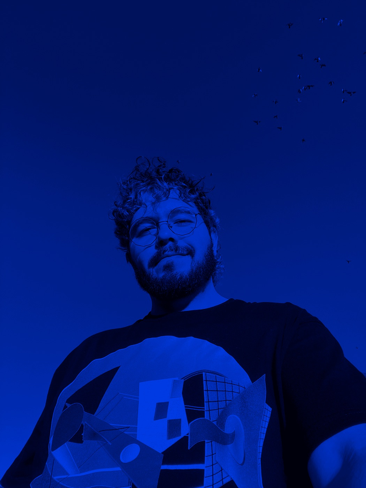

Visual Designer & 3D Artist

Hi, I’m Juan. I design beautiful, meaningful experiences, and now I build them too.
I’m a Mexican visual designer based in San Francisco, working with teams all over the world. I started out as a graphic designer in Mexico, and I now have 10+ years across visual design, UX/UI, branding, 3D and motion.
My career has taken me through health, music, real estate, retail, finance and consultancy work, with companies, startups and global consultancies. That gave me a holistic way of solving problems for all sorts of people’s needs.
Today I’m a Senior Visual Designer at frog. What drives me is visual craft: bringing user experience, technology, storytelling and 3D/motion together to design a better future for all.
I take ambitious ideas all the way from concept to final product, grounded in what people need. I believe you don’t have to choose between an interface that works and one that makes you feel something.
I now build what I design with vibe coding: AI tools let me take an idea to a working product myself, so nothing gets lost in translation. This site is built that way.
In my free time I keep exploring the creative world, always looking for inspiration and ways to feed my artistic side. I’ve gone through several artistic eras, from photography to illustration, and now 3D art, as Brutalist Daddy.
(Services)
- Visual Design
- UX/UI
- Web Design
- Design Language Systems
- Branding
- 3D & Motion
- Vibe Coding (design to code)
- Design Consultancy
- Design Research
- Illustration
- Editorial Design
(Process & Skills)
- Human-centric Design
- Conceptual Design
- User Research
- User Journeys & Blueprints
- Strategic Ideation
- Wireframing
- Prototyping (in code too)
- Systematic Design
- Documentation
(Industries)
- Health
- Music
- Real Estate
- Retail
- Finance
- Consultancy
- frogSenior Visual Designer[years]
- [Studio or company][Role][years]
- [Studio or company][Role][years]
- [Freelance][Role][years]